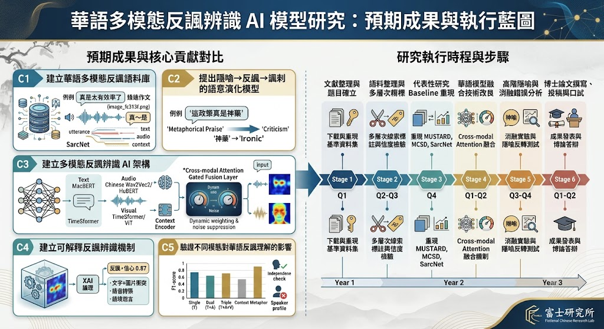
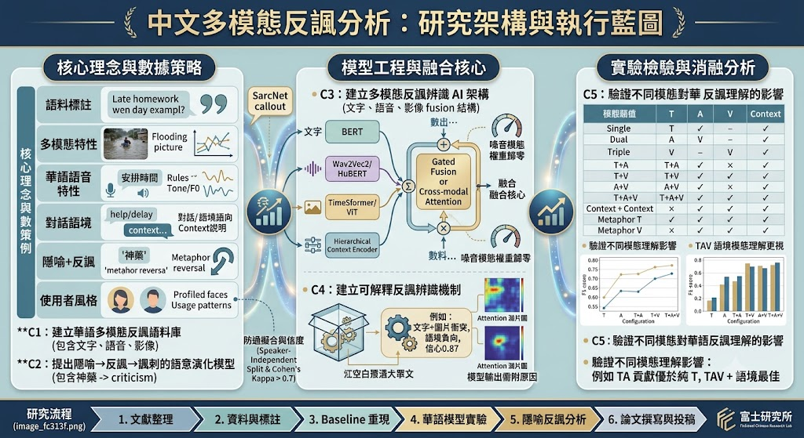
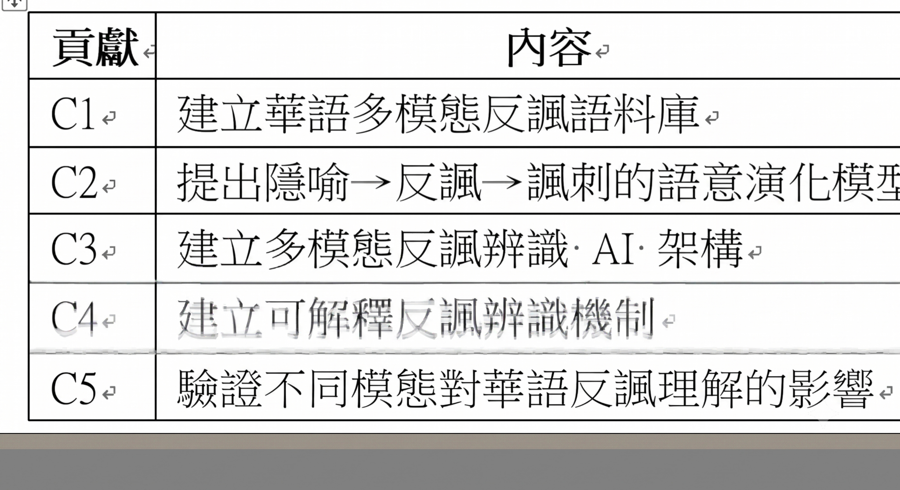
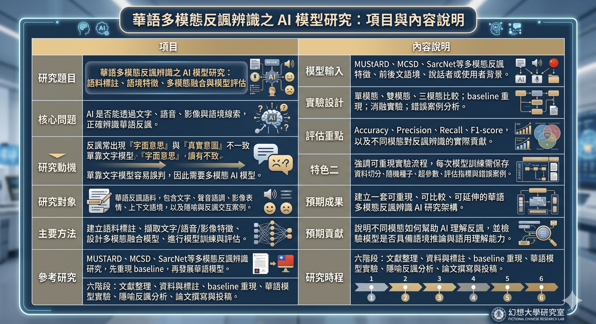
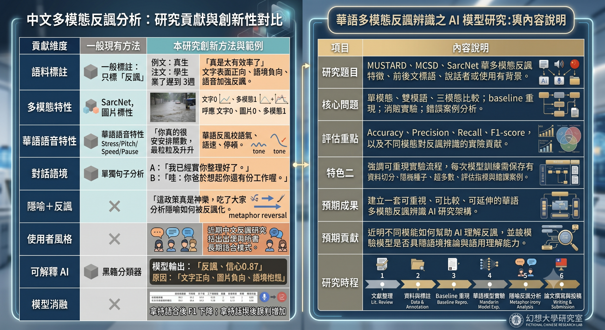
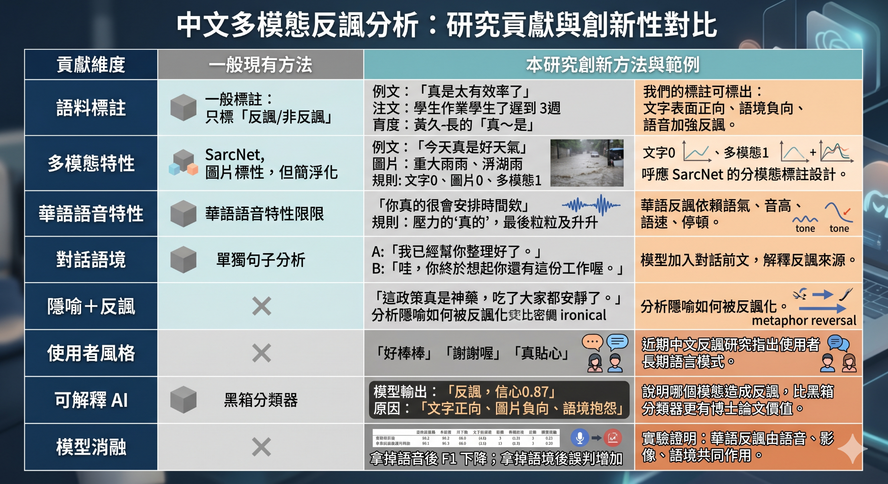
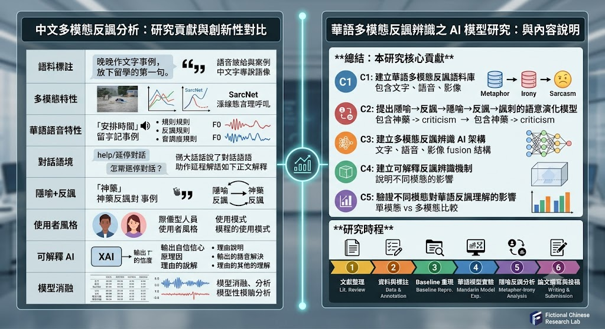

圖1：研究圖片說明

第一張圖以「預期成果與執行藍圖」作為總覽，將博士研究的核心貢獻與三年期執行步驟放在同一張視覺框架中。左側 C1 到 C5 代表五項主要成果：建立華語多模態反諷語料庫、提出隱喻到反諷再到諷刺的語意演化模型、建立多模態反諷辨識 AI 架構、建立可解釋反諷辨識機制，以及驗證不同模態對華語反諷理解的影響。這種安排可以讓讀者快速看出本研究不是單純做二元分類，而是由語料、理論、模型、解釋與驗證共同構成的完整研究。右側時程則把文獻整理、資料蒐集、代表性研究重現、多模態模型設計、隱喻與反諷關係分析、論文投稿與博士論文整合分成六個階段。圖中的箭頭與年度軸線清楚呈現研究如何從基礎資料建置推進到模型發展，再進入成果發表。整體而言，此圖最適合作為提案首頁或研究計畫總覽圖，因為它同時交代研究目標、方法路線、預期成果與執行節奏。
圖2：研究圖片說明

第二張圖聚焦於「研究架構與執行藍圖」，把理論構想、資料策略、模型工程與實驗驗證串成一個完整系統。左側區塊呈現核心理念與數據策略，包含語料標註、多模態特性、華語語音特性、對話語境、隱喻與反諷、使用者風格等面向。這些項目說明華語反諷辨識不能只依靠文字，還必須考慮聲音、表情、影像、上下文與說話者慣用模式。中央區塊是模型工程核心，顯示文字可用 BERT，語音可用 Wav2Vec2 或 HuBERT，視覺可用 TimeSformer 或 ViT，語境可用階層式 Context Encoder，再透過 Gated Fusion 或 Cross-modal Attention 結合。右側則是實驗檢驗與消融分析，利用不同模態組合比較模型效能。圖中最重要的訊息是：本研究不是只提出模型，而是要透過消融實驗證明哪些模態真正幫助華語反諷理解，例如文字加語境、文字加影像、文字加語音是否比單一文字模型更好。
圖3：研究圖片說明

第三張圖以表格形式整理五項研究貢獻，呈現方式簡潔但很適合放在論文簡報或研究計畫書中。C1 是建立華語多模態反諷語料庫，代表整個研究的基礎工程，因為沒有可靠語料就無法進行後續模型訓練與理論驗證。C2 是提出隱喻、反諷與諷刺之間的語意演化模型，這是本研究相較一般反諷辨識研究更具理論深度的部分。C3 是建立多模態反諷辨識 AI 架構，對應到文字、語音、影像與語境融合模型。C4 是建立可解釋反諷辨識機制，讓模型不只輸出「反諷」或「非反諷」，還能指出判斷依據。C5 是驗證不同模態對華語反諷理解的影響，透過消融實驗與模態貢獻分析建立研究可信度。這張圖的價值在於把博士論文的貢獻壓縮成一個清楚的表格，方便指導教授、審查委員或聽眾迅速掌握研究主軸。
圖4：研究圖片說明

第四張圖是「項目與內容說明」型的完整研究摘要，適合作為研究計畫的核心簡報頁。圖中左半部從研究題目、核心問題、研究動機、研究對象、主要方法與參考研究逐層展開。研究題目強調語料標註、語境特徵、多模態融合與模型評估，核心問題則指出 AI 是否能透過文字、語音、影像與語境線索正確辨識華語反諷。研究動機特別強調反諷常出現「字面意思」與「真實意圖」不一致，單靠文字模型容易誤判，因此需要多模態 AI 模型。右半部則整理模型輸入、實驗設計、評估重點、特色、預期成果、預期貢獻與研究時程。它把 MUStARD、MCSD、SarcNet 等研究放入參考脈絡，說明本研究會先重現 baseline，再發展華語模型。整體而言，此圖的功能是把研究從題目到方法再到成果完整說清楚，適合用於資格考、研究提案或與指導教授討論時的總說明頁。
圖5：研究圖片說明

第五張圖將「研究貢獻與創新性」和「研究內容說明」並列，形成左右對照。左側表格將一般現有方法與本研究創新方法進行比較，清楚指出本研究的突破點。一般研究常只做反諷與非反諷標註，但本研究會進一步標註文字表面正向、語境負向、語音加強反諷等細節。一般多模態研究可能只標圖片或文字是否反諷，但本研究採用接近 SarcNet 的分模態標註概念，將文字、圖片與多模態標籤分開處理。語音部分也不只看文字轉錄，而是分析華語語氣、音高、語速與停頓。對話語境方面，本研究加入前後文來解釋反諷來源；隱喻與反諷部分則關注隱喻如何被反諷化。右側則總結研究題目、核心問題、評估重點、特色、成果、貢獻與六階段研究時程。此圖特別能凸顯博士論文的原創性，因為它不是重複現有資料集或模型，而是提出更細緻的華語多模態反諷分析框架。
圖6：研究圖片說明

第六張圖進一步放大「研究貢獻與創新性對比」，以表格方式逐項說明本研究與一般方法的差異。第一列指出一般語料標註多只分反諷與非反諷，但本研究會標出字面正向、語境負向與語音強化反諷，例如「真是太有效率了」在表面上是稱讚，但若語境是學生作業遲到三週，便可能轉為反諷。第二列以「今天真是好天氣」搭配淹水圖片說明，多模態標註必須區分文字、圖片與整體組合，因為單一模態不一定能看出反諷。第三列處理華語語音特性，強調反諷可能依賴語氣、音高、語速與停頓。第四列說明對話語境的重要性，模型需要知道前文才能解釋反諷來源。第五列則把隱喻與反諷結合，分析隱喻如何被反諷化。最後幾列加入使用者風格、可解釋 AI 與模型消融，使研究從語料、理論、模型到實驗驗證都具有完整性。
圖7：研究圖片說明

第七張圖是整體研究的總結與收束頁。左側延續貢獻與創新性對比，將語料標註、多模態特性、華語語音特性、對話語境、隱喻加反諷、使用者風格、可解釋 AI 與模型消融等重點濃縮成表格式說明。右側則用 C1 到 C5 概括本研究核心貢獻：建立華語多模態反諷語料庫、提出隱喻反諷諷刺語意演化模型、建立多模態反諷辨識 AI 架構、建立可解釋辨識機制，以及驗證不同模態的影響。下方的研究時程以六個階段呈現，從文獻整理、資料與標註、baseline 重現、華語模型實驗、隱喻反諷分析到論文撰寫與投稿，構成一條清楚的博士研究路徑。這張圖適合作為簡報最後一頁，因為它能幫助聽眾回顧整體研究邏輯，也能凸顯本研究兼具語言學理論、AI 模型實作與實驗驗證三種價值。